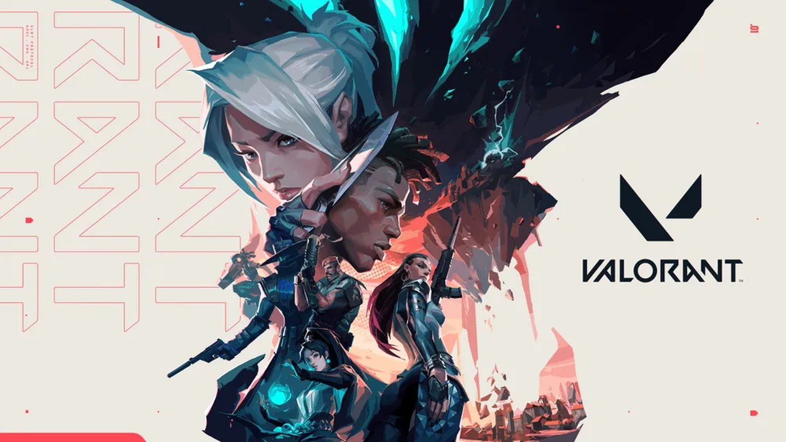

기준일 2026년 11월 24일 (화)커버기간: 11/23(월) – 11/24(화) 07시대스팀·웹 07시대까지 수집
핵심워독스 토론장에 환불 청원이 올라와 답글 56개가 달렸습니다.지표동시 접속은 전날 65,271명에서 52,267명으로 줄었습니다.배틀필드 6은 약 24%, 오버워치2는 약 17% 빠졌습니다.대회PGL 메이저 싱가포르가 내일 11/25 막을 올립니다.CS2 토론에는 VAC 불신 글 답글이 346개 쌓였습니다.국내더로그 집계상 발로란트 PC방 사용시간이 16.1% 늘었습니다.오버워치 정크랫 이벤트는 오늘로 막을 내립니다.방법수치는 11/24 07:34 스팀 Web API에서 받았습니다.화요일 아침 값을 하루 전 월요일 아침과 견줬습니다.
신선도스팀·인벤·루리웹은 데스크톱 내장 브라우저로 07시대에 열었습니다.인벤 오버워치 목록은 ?p=1로 열었고 최신 글이 00:17입니다.핫벤과 아카라이브는 이번 판에서 열지 않았습니다.
근거 표기KR·기사국내 매체글로벌·기사해외 매체커뮤니티원문 직접 확인공식공식 공지지표수치국내 반응 미확인국내 소스 미확인
게임
이벤트 / 업데이트
날짜
유형
커뮤니티 반응 · 관전 포인트
오버워치2정크랫 마지막 날 · 홍보 도배
정크랫의 전리품 사냥은 11/20부터 경험치를 2배로 줍니다.OWCS 월드 파이널 응원 대회는 내일부터 14일 동안 열립니다.12/3~12/7에는 공식 방송을 보기만 해도 추가로 쌓입니다.
11/20~24한국어 패치노트
이벤트 · 게시판
공식커뮤니티지표① 화제 당일 목록에서 가장 많이 읽힌 건 꾸미기 아이템 이야기였습니다. "범사냥꾼 메르시 스킨 막차"는 조회 683회를 기록했습니다. 같은 영웅 상향안을 다룬 글도 620회 읽혔습니다.② 홍보 도배 디스코드 홍보 도배를 꼬집는 게시물은 3건이었습니다. "디코홍보방 가봤는데 귀찮네"는 274회 열람됐습니다. 가장 많이 본 것은 398회였고 나머지는 195회였습니다.③ 접속 오늘 07:34 스팀 동시 접속은 38,818명이었습니다. 전날 같은 시각 46,591명보다 적었습니다.도배 대응은 이벤트 공지와 함께 내야 묻히지 않습니다.오버워치 11월 패치노트 · 인벤 메르시 스킨 막차 글 · 인벤 디코 홍보 글 · 인벤 오버워치 자유게시판

발로란트PC방 사용시간 16.1% 증가
인벤이 오늘 더로그의 11/16~22 주간 리포트를 보도했습니다.전국 PC방 총 사용시간은 약 1,515만 시간이었습니다.발로란트 이용량은 한 주 전과 비교해 16.1% 증가했습니다.
11/16~22더로그 주간 집계
지표 · PC방
KR·기사지표국내 반응 미확인① 지표 전국 PC방 총 사용시간이 전주보다 8.2% 늘었습니다. 기사는 수능이 끝난 시기와 맞물렸다고 설명합니다. 주간 평균 가동률은 15.5%로 집계됐습니다. 주말은 19.9%로 평일 13.7%보다 높았습니다.② 비교 상위 5개 게임 사용시간은 평균 12.1% 증가했습니다. 발로란트는 16.1%로 이 수치를 웃돌았습니다. 리그 오브 레전드 증가율은 9.4%에 그쳤습니다.③ 커뮤니티 인벤 발로란트·루리웹·아카라이브는 오늘 열지 못했습니다. 따라서 국내 여론은 아직 확인하기 전입니다.수능 직후 유입 주간에는 신규·복귀 이용자 안내를 준비해야 합니다.인벤 더로그 11월 3주 PC방 리포트
건즈: 더 듀얼 리마스터정기 점검 · 클랜 보상
11/23 스팀 공지로 오늘 정기 점검이 예고됐습니다.한국 시각 기준 15:00부터 17:00까지 서버를 닫습니다.새 의상 2종과 클랜 토너먼트 보상이 패치노트에 담겼습니다.
11/2415~17시 KST
점검 · 패치
공식지표국내 반응 미확인① 리뷰 11/19 국내 사전 오픈 이후 오늘로 6일째입니다. 스팀 최근 30일 평가는 106개 중 66%가 긍정입니다. 하루 전 수치는 85개 중 56%였습니다. 전체 2,239개 기준으로는 48%에 머뭅니다.② 접속 07:34 동시 접속자는 150명으로 집계됐습니다. 전날 같은 시각과 견주어도 숫자가 그대로였습니다.③ 커뮤니티 스팀 토론과 국내 게시판은 오늘 열지 않았습니다. 따라서 이용자 여론은 이번 호에서 확인하지 못했습니다.평가가 오르는 때일수록 점검 공지에 KST를 함께 적어야 합니다.11/24 패치노트 · 11/24 정기 점검 공지 · 건즈 상점
04
글로벌 포커스
근거는 스팀 커뮤니티 토론·리뷰 원문과 SiegeGG·Dot Esports·Liquipedia 등 전문지, 그리고 공식 패치노트입니다.
오늘 연 해외 커뮤니티확인워독스상위 16건 · 방금~6시간 전 · 활성 주제 1,912건 · 글 본문 2건확인CS2상위 10건 · 방금~15분 전 · 활성 주제 1,530건 · 글 본문 1건확인델타포스상위 10건 · 4시간 전부터 · 활성 주제 284건확인THE FINALS상위 15건 · 43분 전부터 · 활성 주제 620건 · 글 본문 1건확인목록만배틀필드 6(1,207건) · 마블 라이벌즈(522건) · PUBG(591건) · 시즈(244건)확인스팀 Web API현재 접속자 16종 · 07:34 한 번 · 스팀 소식 13종확인스팀 상점워독스·건즈·HUNGER·Blackout Route·Strato Alto·GUNBOAT-8·DERELIKT·Cronos: Lazarus·Mycopunk제외미열람에이펙스 · 오버워치2 · 데스티니 2 토론축 없음스팀 미등록발로란트와 서든어택
게임
이벤트 / 업데이트
날짜
유형
커뮤니티 반응 · 관전 포인트
워독스 (WARDOGS)시즌 3 13일째 · 환불 청원
워독스 동시 접속은 07:34 기준 52,267명입니다.전날 이 시각의 65,271명보다 약 20% 적습니다.배틀필드 6은 24%가량, 오버워치2는 17%가량 빠졌습니다.
11/23~24접속 −20%
드라이버 · 여론
공식커뮤니티지표① 드라이버 11/23 밤 NVIDIA 관련 공지가 올라왔습니다. 621.35 핫픽스로도 끊김이 남았다고 밝혔습니다. 안정 버전 617.42로 되돌리라고 권했습니다.② 인원 4만 명으로 줄었다는 글에 답글 51개가 달렸습니다. "50,875 In-Game"(게임 중 50,875명)이라는 반박이 나왔습니다.③ 환불 청원 글은 의견 56개를 모았습니다. "You played for 109 hours"(109시간이나 했다)는 반론이 붙었습니다.외부 원인 장애는 원인·영향 버전·임시 해결을 한 공지로 묶어 고정합니다.NVIDIA 드라이버 공지 · 4만 명 글 · 환불 청원 글 · 초기화 반대 글
Counter-Strike 2메이저 하루 전 · VAC 불신
PGL 메이저 싱가포르 2026이 11/25 막을 엽니다.동남아에서 처음 열리며 32팀이 상금 125만 달러를 다툽니다.지난주 업데이트로 맵 Cobblestone이 돌아왔습니다.
11/25~PGL 싱가포르
대회 · 치트
커뮤니티글로벌·기사지표① 지표 07:34 동시 접속은 634,855명입니다. 스팀 토론 활성 주제는 1,530건입니다.② 치트 불신 8월에 시작된 VAC 불신 글은 답글 346개를 모았습니다. 3분 전까지도 새 의견이 이어졌습니다. "Vacnet banning legit players"(정상 이용자를 제재한다)는 12분 전에 올라왔습니다.③ 맵 복귀 Cobblestone과 새 패스를 반기는지 묻는 토론이 있습니다. 여기에는 답글 7개만 붙었습니다.큰 대회 직전에 커지는 부정행위 불신에는 제재 현황을 먼저 내놓습니다.Sheep Esports 메이저 일정 · Cobblestone 복귀 공지 · VAC 불신 글 · CS2 토론
델타포스시즌 오로라 15일째 · 매칭 해명
11/23 공식 Ask Shadow Anything 글이 올라왔습니다.지역·시간대·서버 노드·맵별 대기 인원을 원인으로 꼽았습니다.맵과 모드가 늘면서 큐가 갈라졌다고도 밝혔습니다.
11/23Ask Shadow
매칭 · 공지
공식커뮤니티지표① 향후 계획 솔로 큐는 특정 시간에만 돌려놓겠다고 했습니다. 대기와 매치 품질이 괜찮을 때라는 조건이 붙었습니다. 용량 최적화는 주요 과제로 꼽았습니다. PS5 텍스처 로딩 핫픽스도 준비 중입니다.② 토론 반응 스팀 활성 주제는 284건입니다. "Cheaters"(치터들) 글에는 답글 11개가 달렸습니다. 매칭이 역대 최악이라는 의견은 아직 아무 반응을 얻지 못했습니다.③ 제재 11/23에는 보안팀의 위반 공지도 따로 올라왔습니다.대기 시간 불만에는 원인과 조건부 계획을 숫자 기준과 함께 설명합니다.Ask Shadow Anything · 위반 제재 공지 · 델타포스 토론
THE FINALS그랜드 메이저 사흘 전 · 치트
오늘 03:01 공식 글로 스팀 어워드 추천을 청했습니다.부문은 Labor of Love이고 마감은 30일 오전 10시(PT)입니다.그랜드 메이저 2026은 상금 15만 달러로 27일 개막합니다.
11/24어워드 추천
공지 · 치트
공식커뮤니티지표① 지표 07:34 동시 접속은 12,433명입니다. 전날 14,947명보다 약 17% 적습니다. 토론 활성 주제도 661건에서 620건으로 줄었습니다.② 치트 대책 요구 글의 답글이 9개에서 17개로 늘었습니다. 작성자는 11/22 리플레이 5판 중 3판 이상을 의심했습니다. "CHEATERS EVERYWHERE"(사방이 치터) 글도 53분 전 나왔습니다.③ 성능 지난 업데이트 뒤 성능이 떨어졌다는 토론에도 답글 26개가 붙었습니다.상 추천을 부탁하는 주에는 부정행위 대응 근황을 함께 냅니다.스팀 어워드 추천 글 · 치트 대책 요구 글 · 성능 저하 글
HUNGER는 GOOD FUN CORP가 만든 1인칭 약탈 슈팅입니다.보도자료 기준으로 스팀 찜이 70만 건을 넘었습니다.무료 오픈 베타는 11/27~29이고 상점 페이지에서 신청합니다.같은 주말에 GUNBOAT-8 출시와 THE FINALS 그랜드 메이저가 겹칩니다.앞서 해보기는 그다음 주인 12/3에 열립니다.
국내 관심은 루리웹 신설 게시판 맨 위 자리에서 먼저 드러났습니다.다만 11/23 첫 글은 조회수 33회에 머물러 반응이 아직 작습니다.한국어 미지원이 베타 주말 국내 참여를 얼마나 막을지 지켜봅니다.
이번 주 일정 · Blackout Route · Strato Alto · GUNBOAT-8
이번 주 소형 슈터 세 편은 국내 반응이 비어 있습니다.
Blackout Route가 11/24 상점 기준 앞서 해보기로 나왔습니다.IGDB에는 그보다 하루 이른 날짜가 출시일로 적혀 있습니다.첫날 평가 16개 중 81%가 긍정이고 07:34 접속은 13명입니다.Strato Alto는 11/26, GUNBOAT-8은 11/27에 앞서 해보기를 시작합니다.출시를 앞둔 두 게임은 이용자 평가가 아직 0개입니다.
세 게임 모두 루리웹 신설 게시판 14개에 이름이 없습니다.국내 이용자가 의견을 남길 전용 공간이 마련되지 않았습니다.Blackout Route 평가가 16개에서 얼마나 늘지 지켜봅니다.
11/14에 나온 DERELIKT는 평가가 하루 새 275개에서 301개로 늘었습니다.긍정 비율은 82%이고 접속은 144명에서 116명으로 줄었습니다.Mycopunk는 같은 시각 374명으로 전날 530명보다 적습니다.최근 30일 평가는 714개이고 그중 89%가 긍정입니다.대형 슈터도 17~24% 줄어 화요일 아침 효과가 섞였습니다.
루리웹 신설 게시판에는 마이코펑크가 아직 남아 있습니다.출시 뒤에도 국내 이용자의 관심이 끊기지 않았다는 신호로 읽힙니다.실제 이탈 여부는 다음 주 화요일 아침 값과 견줘야 보입니다.
무엇이이탈을 말하는 글이 6시간 만에 답글 51개를 모았습니다.제목은 "Damn....only 40k players now"(이제 4만 명뿐)입니다.20시간 전 열린 청원 스레드에는 댓글 56개가 붙었습니다.본문은 강제 환불에 동의하면 답글을 달라고 요청합니다.초기화 반대 글은 하루 새 21개에서 47개로 늘었습니다.
맥락시즌 3은 11/12에 시작해 오늘 13일째를 맞았습니다.07:34 동시 접속은 52,267명으로 전날보다 약 20% 줄었습니다.같은 시각 배틀필드 6은 약 24%, 오버워치2는 약 17% 빠졌습니다.한국어 평가는 2,925개 가운데 38%만 긍정입니다.최근 30일 전체 63,318개의 76%와 차이가 큽니다.
우리 운영 교훈
지표 동접 감소는 요일 효과를 걷어 내고 비교합니다.
공지 외부 원인 장애는 영향 버전과 대처를 함께 알립니다.
수치 인원 논쟁이 붙으면 공식 숫자를 먼저 내놓습니다.
MID · 대회 전야 불신
CS2 메이저 전야에 부정행위 불신이 커집니다.
무엇이8월에 올라온 VAC 불만 스레드가 아직 이어집니다.답글은 346개이고 마지막 글은 3분 전에 달렸습니다.12분 전에는 "Vacnet banning legit players"(정상 이용자도 제재한다)가 새로 올라왔습니다.부정행위 불만과 함께 제재 오류 걱정도 나왔습니다."This game is ruined by cheaters"(치터 때문에 게임이 망했다)에는 답글 4개가 붙었습니다.
맥락PGL 메이저 싱가포르가 내일 11/25에 개막합니다.32팀이 상금 125만 달러를 놓고 겨룹니다.11/18 Cobblestone 복귀 업데이트로 메이저 허브와 Pick'Em이 열렸습니다.07:34 동시 접속은 634,855명, 토론 활성 주제는 1,530건입니다.같은 날 THE FINALS의 치트 대책 요구 글도 답글이 9개에서 17개가 됐습니다.
우리 운영 교훈
대회 큰 경기 전날에는 제재 문의 답변을 미리 준비합니다.
오탐 정상 이용자의 억울함에는 이의 제기 경로를 안내합니다.
비교 치트 불신 글은 다른 게임 게시판도 함께 살핍니다.
08
CM 액션 제안
1
외부 장애는 원인·버전·해결책을 한 공지로 묶어 고정해야 합니다.
워독스는 11/23 밤 NVIDIA 드라이버 621.14·621.24·621.35를 문제로 짚었습니다.프리징과 끊김을 겪는 일부 RTX 40·50 이용자에게 617.42 복귀를 권했습니다.같은 날 "GPU Utilization"(GPU 사용률) 글에는 답글 11개가 달렸습니다.우리도 외부 원인 장애는 한 공지에 모아 상단에 고정합니다.
2
국내 게시판 홍보 도배는 이벤트 공지와 함께 정리해야 합니다.
정크랫 이벤트 마지막 날 인벤 오버워치 게시판에 도배를 다룬 글이 3건입니다.가장 많이 읽힌 글은 조회 398회를 기록했습니다.배그 게시판 최근 글도 디스코드 모집이었습니다.우리도 이벤트 공지를 낼 때 홍보 도배 글을 함께 정리합니다.
유의사항방법이번 판은 11/24 07시대에 데스크톱 내장 브라우저로 읽었습니다.토론 수치는 목록 첫 페이지 상위 글에서 셌습니다.측정동시 접속은 스팀 Web API로 07:34에 한 번 잰 값입니다.화요일 아침 값을 월요일 아침과 견줘 거의 다 17~24% 낮게 나왔습니다.일정IGDB 캐시는 11/23 09:20 갱신본입니다.상점과 맞춘 5건 중 날짜가 하루 어긋난 슈터는 2건입니다.HUNGER와 GUNBOAT-8은 그 목록에서 빠졌습니다.미확인메이저 일정은 Sheep Esports 5월 협찬 기사를 근거로 적었습니다.발로란트 국내 커뮤니티와 핫벤은 열지 못했습니다.캐시건즈 접속 150명은 전날 같은 시각과 똑같습니다.우연인지 캐시인지는 가리지 못했습니다.